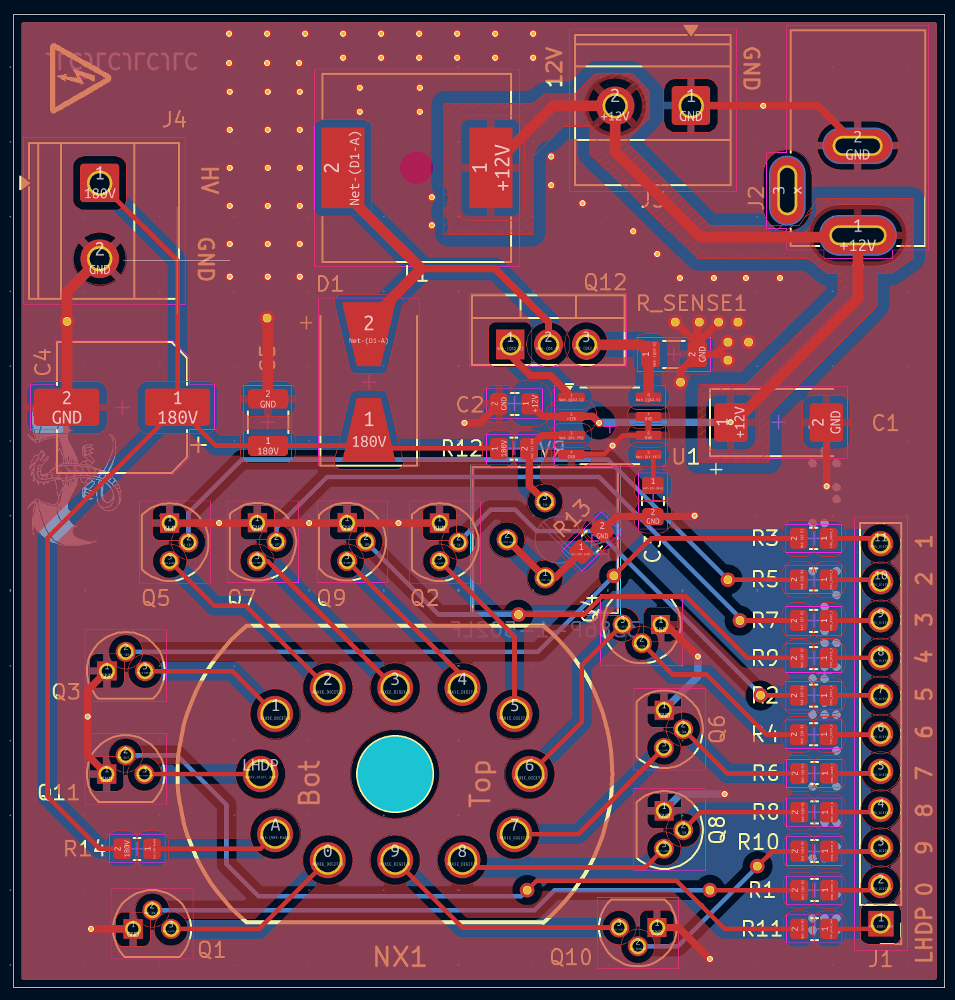
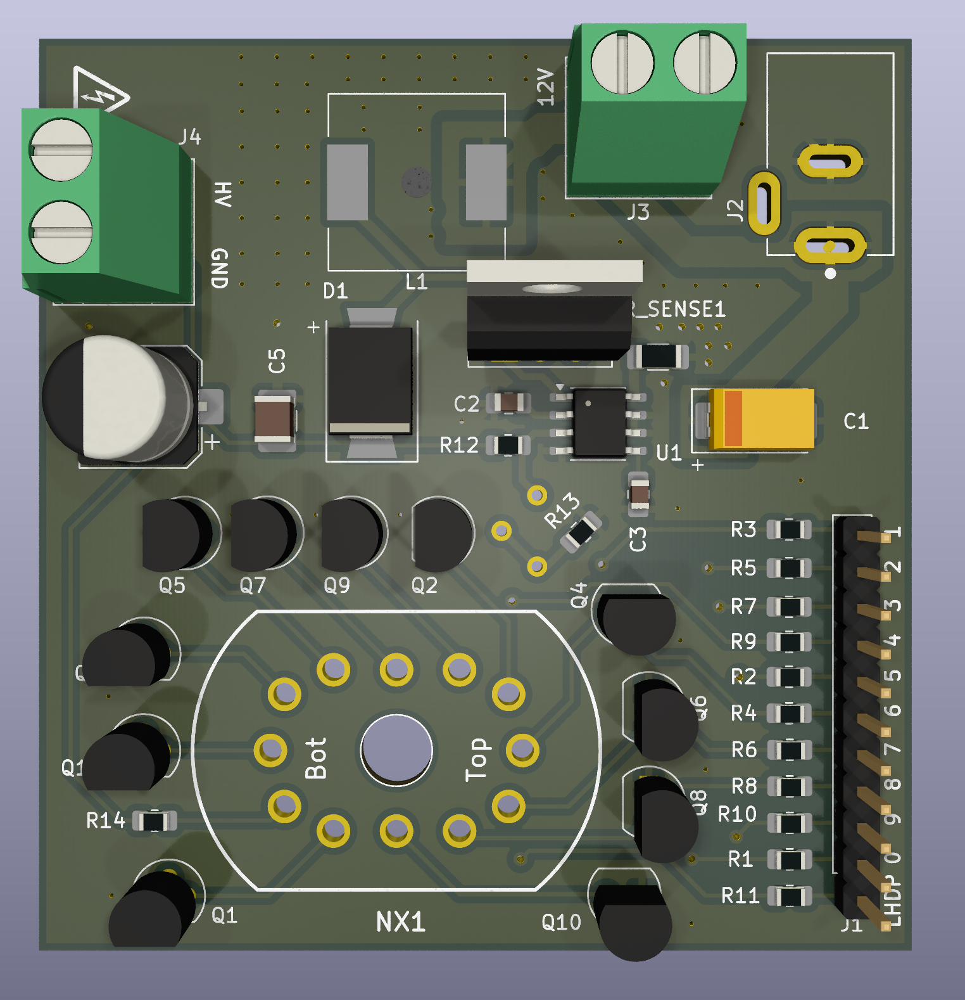

12V -> 180V Boost Convertor
hv!
12V to 180V, 50mA boost convertor prototype to light up Soviet era nixie tubes with IN-12 tube pinout.


hv!
12V to 180V, 50mA boost convertor prototype to light up Soviet era nixie tubes with IN-12 tube pinout.

